Win: big NEXT LEVEL with the level name, Replay as a small button, Hangar gone. Lose: one big RETRY. Mocked on the real results screen.
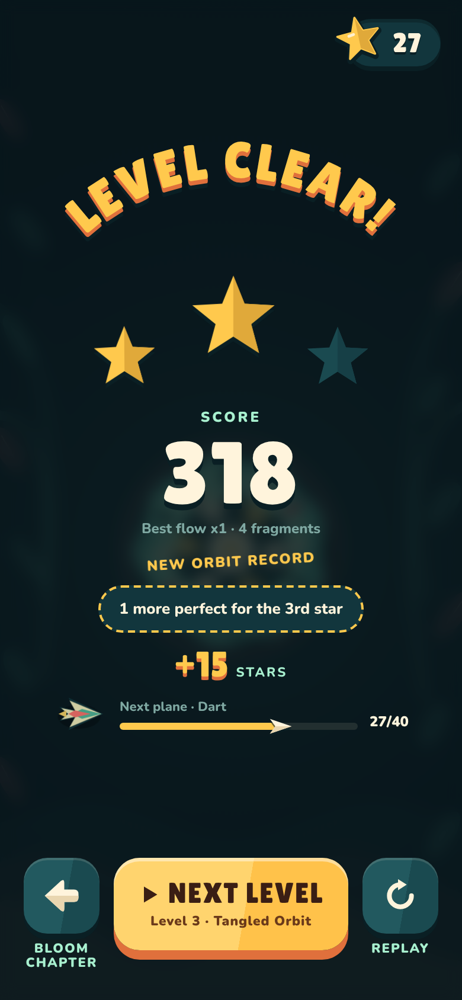
WinNEXT LEVEL is the primary action and names where you're going. Replay is secondary. No shop on the win screen.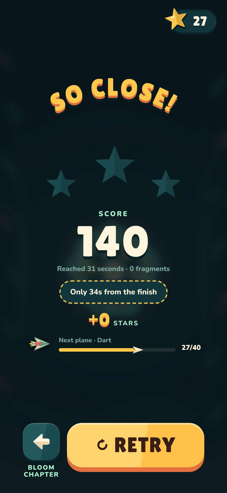
So closeOne big RETRY, the near-miss line ("only 34s from the finish") stays. Back goes to the chapter.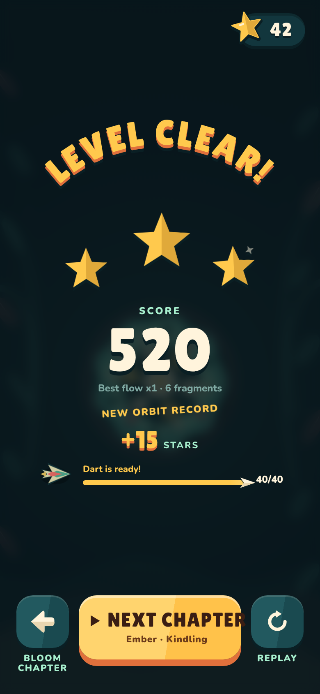
Last level of a chapterNEXT CHAPTER carries you straight into the next island.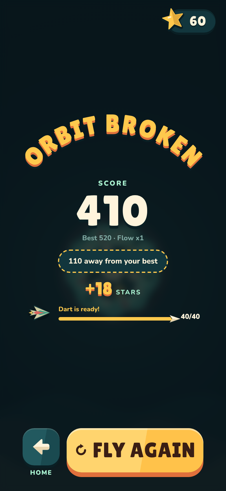
AscensionFLY AGAIN is instant; the gap to your best is the hook.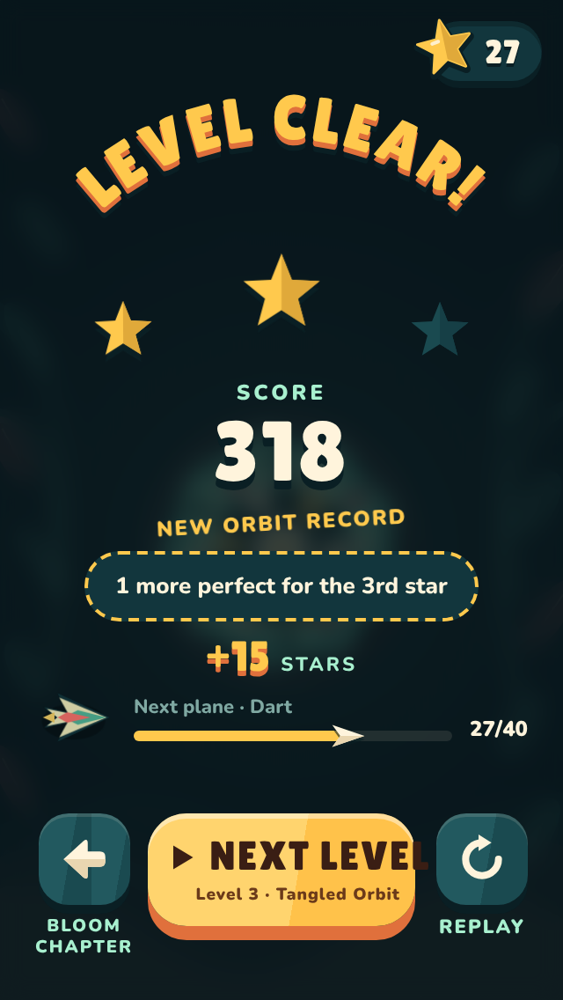
320 × 568The same row fits the smallest phone.Today it's a small unlabeled tab. Each option names the mode and shows your best, in the game's language.
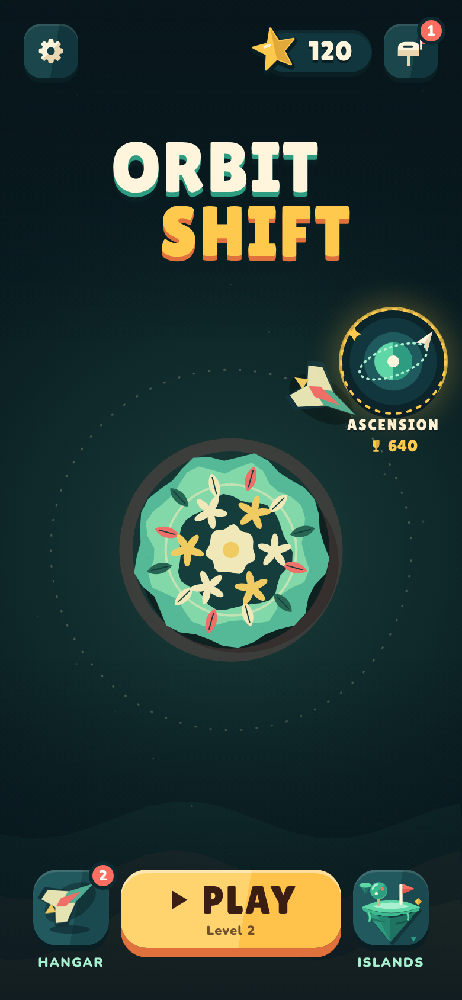
B · Orbit portalRECOMMENDEDA glowing portal ring with a planet and a looping glider, "ASCENSION" and your best underneath. Reads as "a place to fly into", animated ring and glider.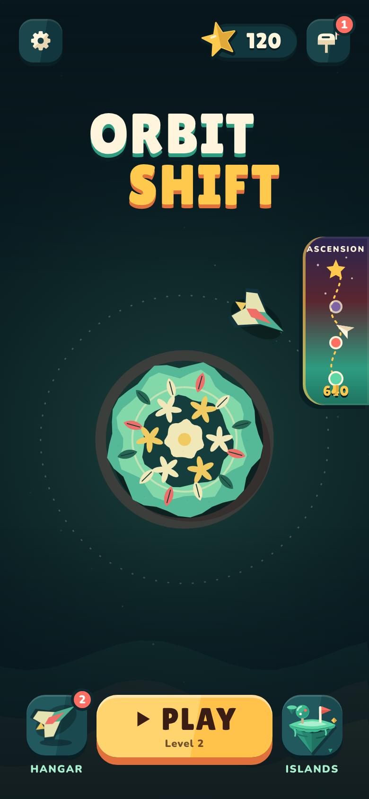
A · Sky ladderA tall tab that climbs Bloom → Ember → Void to a star; the glider sits at the furthest biome you've reached. Shows progress, but busier.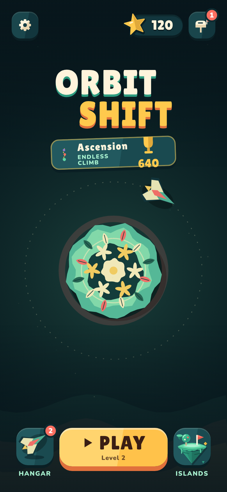
C · Ticket under the titleMost explicit ("Ascension · Endless climb · best"), but adds text to Home, which you asked to keep minimal.The first lantern is a moment, the string is tappable, and a missed night says what to do.
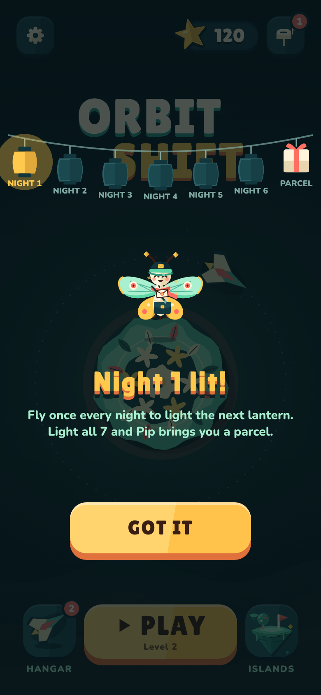
Night 1, first time onlyAfter the first flight a lantern flies from the results to the string and lights up. Two short lines, one button, and Pip gives you your first Paper Moon.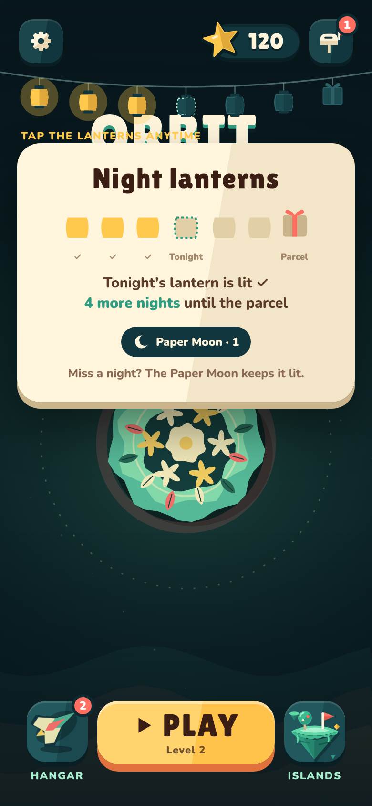
Tap the lanterns any timeTonight lit or not, nights to the parcel, Paper Moons held. The newest lantern also wears a small gold number (night 3), so the streak reads as a count.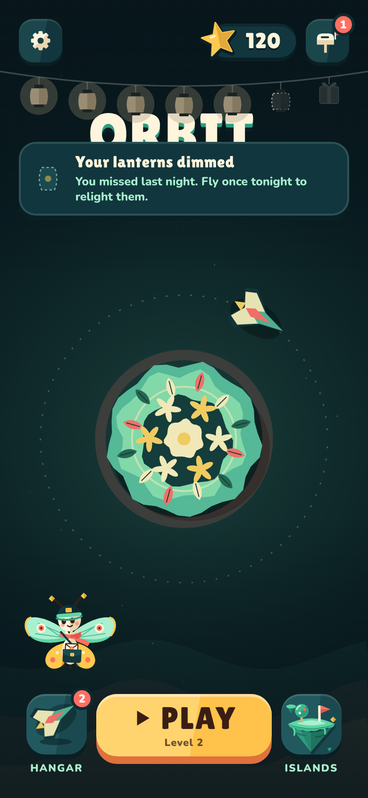
A missed nightThe string dims and one toast says exactly how to fix it. Pip looks worried instead of extra text on Home.No separate practice mode, no "Tutorial?" question, no text panels. The first three gates of Level 1 guide you: gate 1 waits in slow motion for your tap, gate 2 slows a little, gate 3 is yours. Nothing can crash until then. Hold and gold postmarks are taught the first time they matter.
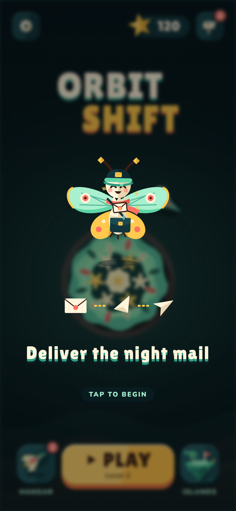
1 · The letterPip hands you a letter; it folds into the glider. One line of story.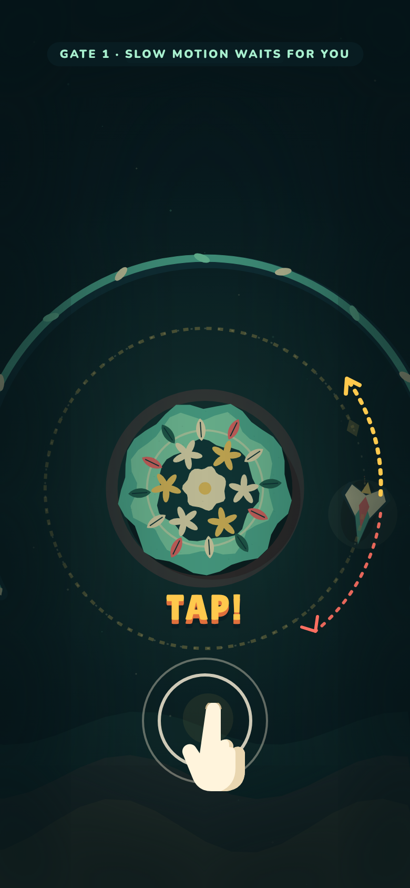
2 · Tap! (gate 1)The glider heads for the wall; time slows right down and waits; the finger taps. Your tap restores speed and flips the glider.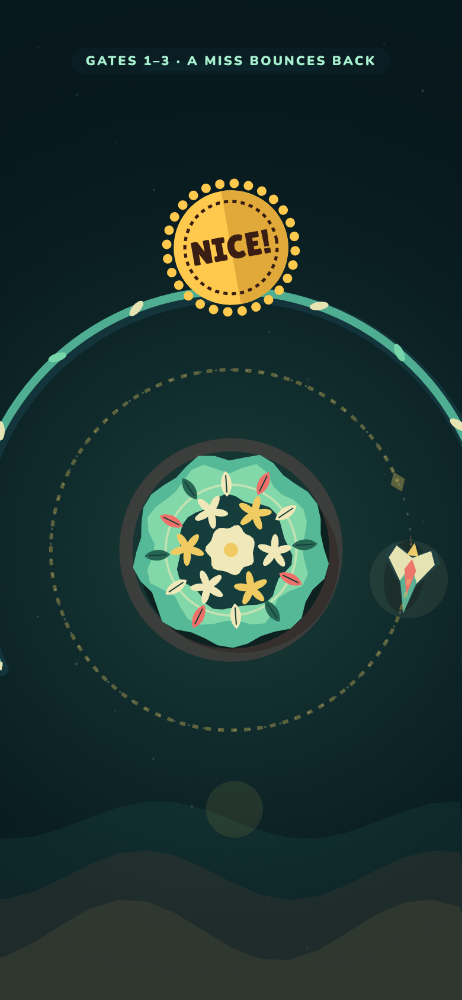
3 · Through the gapThe gap glows; passing stamps NICE!. Gate 2 slows less, gate 3 not at all. A miss in these three bounces softly; no game over.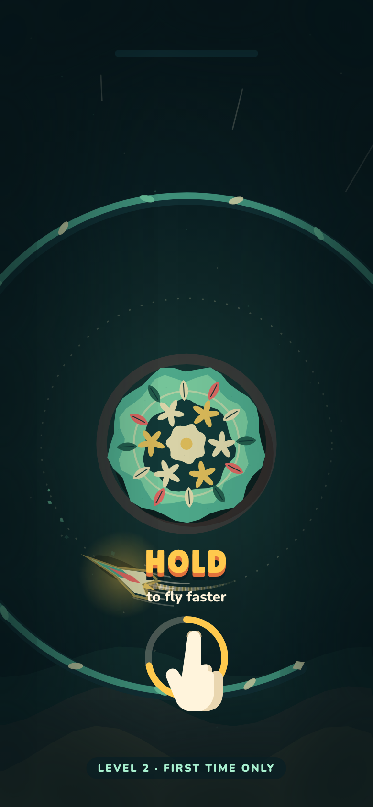
4 · Hold (Level 2)Taught once, when a gap is escaping: slow motion, finger holds, a ring fills, the glider tucks and races.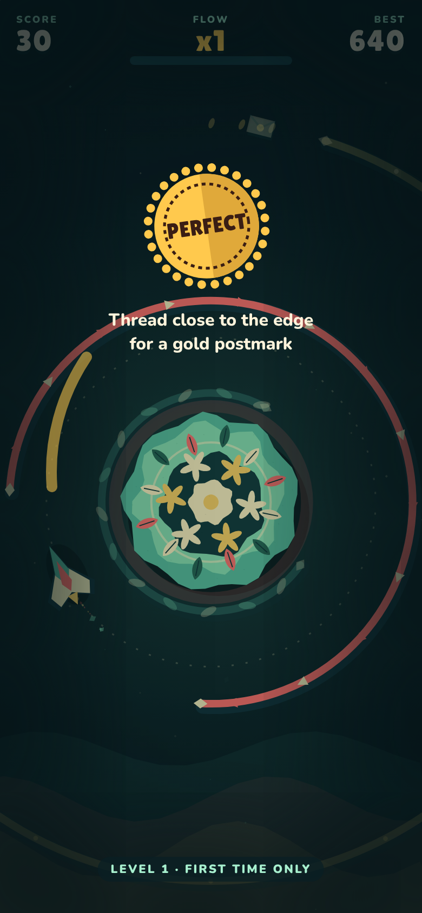
5 · Gold postmark (Level 1)The first perfect freezes for a beat and explains itself. Fragments get the same treatment the first time.Rendered with the game's own glider and trail art. Tap and hold become two clearly different motions.
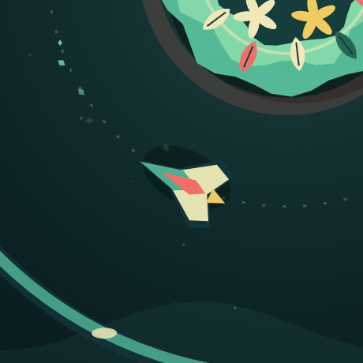
FlyingPaper flutter, soft bank into the orbit.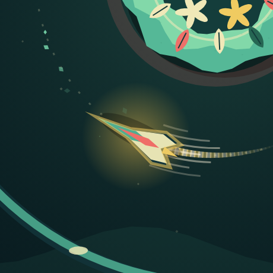
Hold: boostStretch, gold glow, 60% longer gold trail, wind lines, camera pulls back a touch (wider view reads faster), rising whoosh.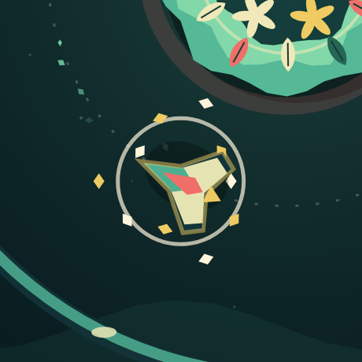
Let goWings spring open with a paper puff.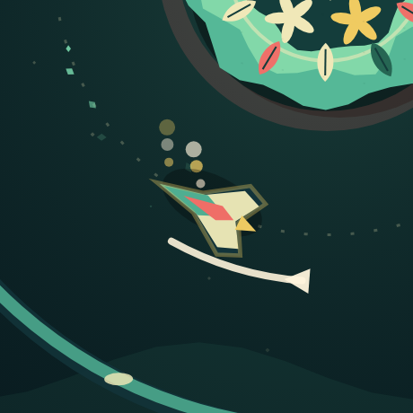
Tap: turnA snap flip with a swoosh arc and paper puffs.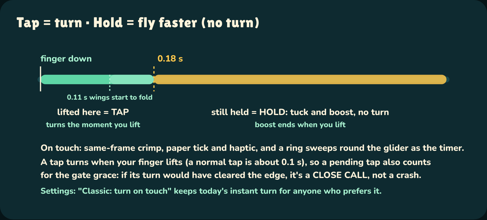
Yes to your idea, as an optional remix, never the campaign's hard mode. Each Special Delivery changes one rule, says it in one line, and shows 1–3 wax seals for difficulty. It unlocks after the Solar Forge or 60 s in Ascension, appears as a stamp on levels you've already cleared, and one twist a week becomes Tonight's Letter on a fixed night.
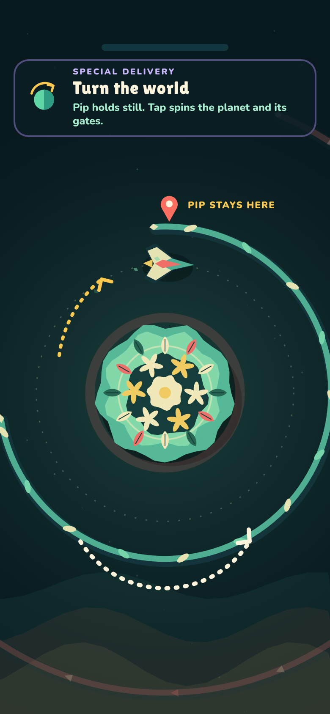
Turn the worldYOUR IDEAPip stays pinned at the top; a tap reverses the planet's spin and swings its gates to you, like turning the tower in Helix Jump. Every level works as-is, so it's the cheapest to prototype.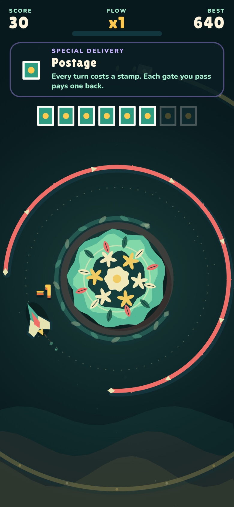
PostageEvery turn costs a stamp, every gate passed pays one back. Each tap becomes a decision, and it fits the post office story.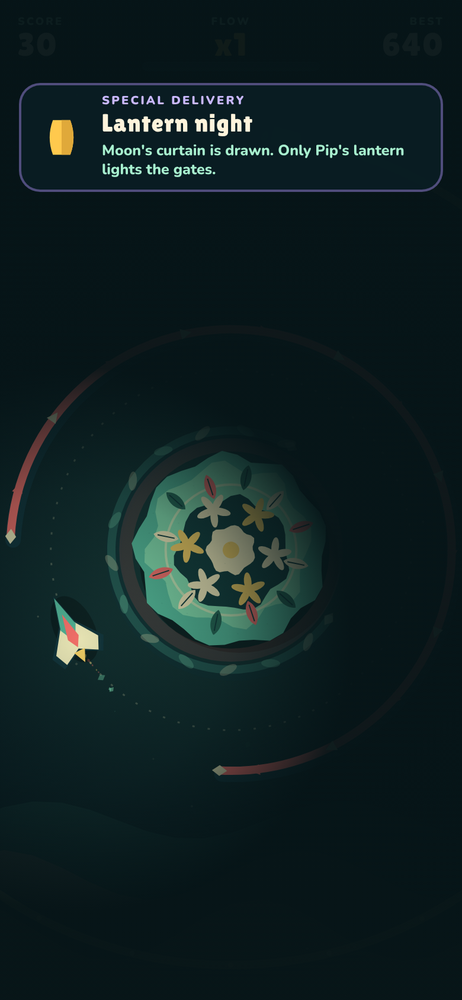
Lantern nightMoon's curtain is drawn: only the light around Pip shows the gates. Same tap, new nerve; a natural opener for the Void chapter.